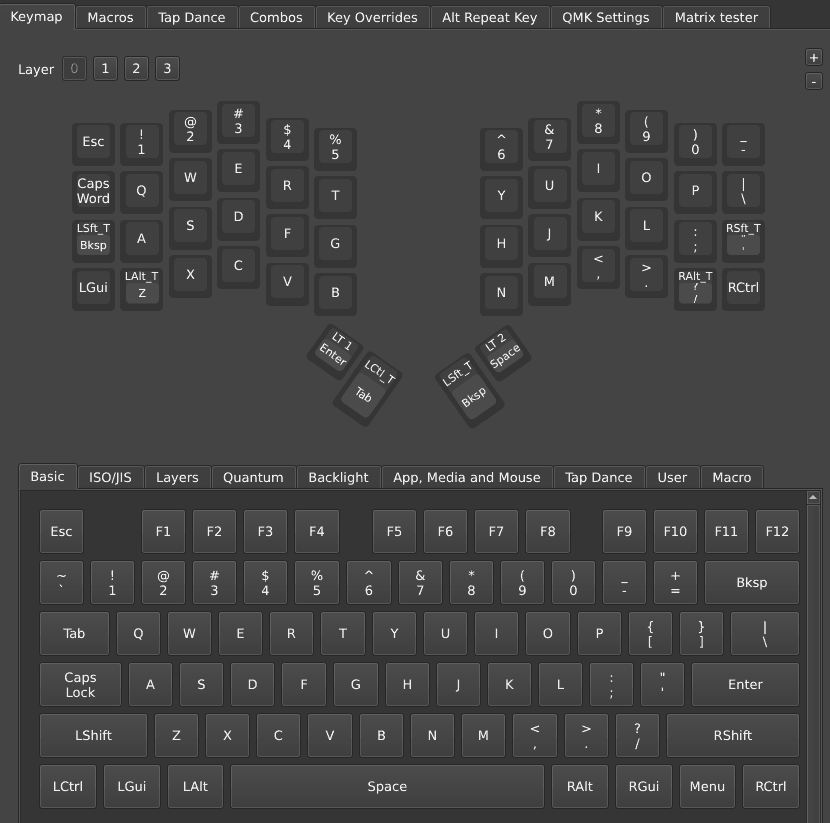
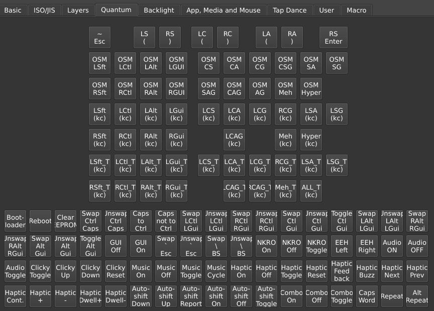
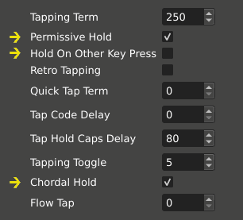
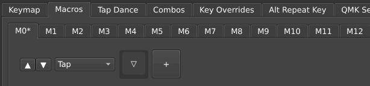
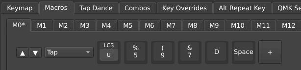
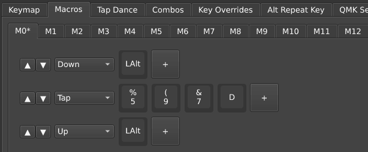
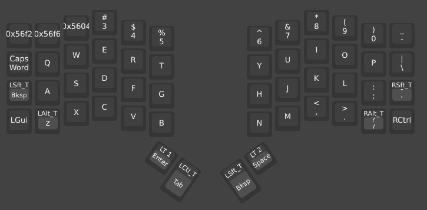
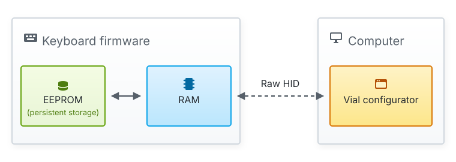
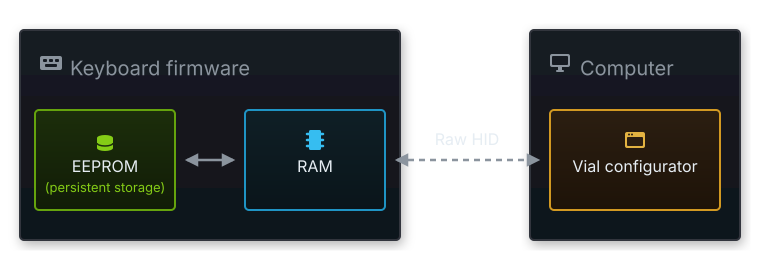

Guide to Vial keyboard firmware
Pascal Getreuer, 2026-04-30
What is Vial?
Vial is a keyboard firmware and a companion configurator GUI. Its main value proposition is dynamic, on-the-fly keymap changes through the configurator, as well as editing macros, combos, and other features.

How does Vial relate to QMK?
Vial is a fork of the widely used QMK firmware, short for Quantum Mechanical Keyboard firmware. However, unlike mainline QMK, where updating your keymap requires editing a keymap.c source file + recompiling + reflashing to the keyboard, Vial allows you to modify your keymap instantly.
On-the-fly editing: Edits made in the configurator apply instantly to the keyboard.
No host software required: Your keymap and settings are stored directly in the flash memory of the keyboard’s microcontroller. Once configured, the keyboard remembers its settings and works with any USB-compatible device.
Feature limitations: Vial provides QMK’s layers, combos, tap-hold keys, one-shot keys, Tap Dance, Key Overrides, and then some—see the Vial user manual. But not all QMK features are exposed. As of this writing in April 2026, Vial notably lacks per-key tap-hold settings, Autocorrect, Key Lock, Leader Key, OS Detection, Swap Hands, and Unicode input. If needed, you can customize your Vial build to enable missing features.
How does Vial relate to VIA?
VIA firmware another QMK-based firmware supporting dynamic keymap editing. While the two are functionally similar, Vial is an improvement over VIA in the following ways:
Expanded capabilities: Vial natively supports more features, including Auto Shift, Caps Word, Combos, Key Lock, Key Overrides, Layer Lock, Repeat Key, Tap Dance, as well as dynamic editing of tap-hold configurations like Permissive Hold, Quick Tap, Chordal Hold, and Tap Flow.
Active maintenance: While VIA remains partially closed-source and appears to have no updates since 2020, Vial is fully open-source and actively maintained.
Automated device recognition: Unlike VIA, which requires you to manually load a JSON definition file to recognize the keyboard, Vial stores this metadata directly on the keyboard and automatically provides it to the configurator.
Install Vial on your keyboard
To use Vial, your keyboard needs to be running Vial firmware. Vial is compatible with the vast majority of QMK-supported keyboards. Note that Vial is not just an “add on” to QMK, it replaces it with its own dynamically-enhanced flavor of the firmware.
Set up your build environment
Vial firmware reuses QMK’s build system, so the steps here are basically to install QMK, then switch over to using Vial’s sources.
Instructions:
Optional but encouraged: If you are unfamiliar shell commands like
cdandls, it is suggested to read this primer.Install QMK by following Setting Up Your QMK Environment. Windows users will install the QMK MSYS shell environment, which is also used for running the shell commands in the following steps.
Get Vial’s code with the following shell command, cloning vial-kb/vial-qmk:
git clone git@github.com:vial-kb/vial-qmk.gitThe above creates a new folder
vial-qmk. Note: do not nest thevial-qmkfolder inside any existing QMK repo folder (or you will have a confusing time).Enter the vial-qmk folder:
cd vial-qmkGet git submodules with this command:
make git-submoduleVerify the environment is successfully set up with:
qmk doctor
See also the “Prepare Your Build Environment” instructions in the Vial documentation.
Next, find your keyboard’s “vial” keymap: Within the
keyboards folder, find your (exact!) keyboard
model. This folder mirrors upstream QMK, and QMK’s keyboard browser is handy to search for
a specific model. If you cannot find it, ask your keyboard vendor.
-
folder_openvial-qmk
-
folder_openkeyboards
- (more keyboards…)
-
folder_openzsa
-
foldermoonlander
-
folderplanck_ez
-
folder_openvoyager
-
folder_openkeymaps
-
folderdefault
-
folder_checkvial
-
-
-
- (more keyboards…)
-
vial” keymap folder for the ZSA Voyager.
Within your keyboard’s folder, look for keymaps/vial. If
this folder exists, Vial is already supported. If not, refer to Vial’s porting
guide on how to port a QMK keyboard to Vial.
Build and flash the firmware
Build Vial: To build Vial firmware for the keyboard
under keyboards/<kb>, run the shell command from the
root vial-qmk directory:
make <kb>:vialReplace the “<kb>” bit with the path for your
keyboard, but omitting “keyboards/” and without a leading
slash “/.” For example, the command
“make zsa/voyager:vial” builds Vial for keyboard
keyboards/zsa/voyager.
Flash Vial: The final step is flashing the firmware to the keyboard.
⚠ Warning
Do not unplug the keyboard or otherwise interrupt the flashing process while the firmware is being written.
With the keyboard connected to the computer, put the keyboard into DFU (device firmware update) mode, for instance by pressing the “Reset” (or “Bootloader”) button on the keyboard. There are several other ways it might be done, see this page.
Then, run this command to write the firmware to the keyboard, again
replacing “<kb>” according to your keyboard
model:
make <kb>:vial:flashTroubleshooting: If building or flashing fail, the
“qmk doctor” command may show suggestions to fix common
problems.
Using Vial
To use Vial, you must first install Vial firmware on the keyboard.
Once Vial firmware is running on your keyboard, use the Vial configurator to edit the keymap and settings. There are two options:
Vial web app, https://vial.rocks: I suggest this is the preferable option. It requires no installation and ensures you’re using the most up-to-date version of the configurator.
Vial desktop standalone application (dowload page).
Linux users: You must create a udev rules file to grant the configurator the necessary permissions to interface with your keyboard.
Assigning a key
Vial makes it easy to assign what a key does. In the top area of the configurator window, click the key you would like to change, then in the bottom area, select from the palette what to assign to it. The palette has multiple tabs for different kinds of keys.
Vial’s documentation is limited. Refer to QMK’s documentation, which is much more detailed, if you need further explanation of a key or feature.

An incomplete inventory:
Basic tab: the letter keys A–Z, digits and most other keys that you would find on a regular keyboard, what QMK calls the “basic keycodes” (QMK docs).
Layers tab: layer switch keys like MO(layer), OSL(layer), and LT layer (kc) for switching between layers (QMK docs).
Quantum tab:
OSM mod: one-shot modifiers, aka sticky keys (QMK docs).
LSft(kc), LCtl(kc), and other mod + keycode combinations (QMK docs).
LSft_T(kc), LCtl_T(kc), etc. (note “
_T” suffix): mod-tap keys (QMK docs).~ Esc: Grave Escape (QMK docs).
LS (, RS ), etc.: Space Cadet (QMK docs).
Swap Ctrl Caps, etc.: “Magic Keys” functionality (QMK docs).
Caps Word: Caps Word, capitalize until end of current word (QMK docs).
Repeat, Alt Repeat: Repeat last key (QMK docs).
App, Media, and Mouse tab:
Vol +, Media Play, etc.: keys for media playback.
Browser Back, etc.: web browser navigation.
Mouse Up, Mouse 1, etc.: Mouse Keys (QMK docs).
Backlight tab: keys for backlighting (QMK docs) and RGB matrix light (QMK docs).
MIDI tab: MIDI note keys (QMK docs).
Tap Dance tab: see Vial’s Tap Dance docs.
Macro tab: see Vial’s Macros docs.
Some advanced keys, like LSft(kc), LSft_T(kc),
and LT 1 (kc), are compounds taking a “kc” basic
keycode as a parameter. To assign such keys, first select the advanced
keycode. When placed, the key will show smaller placeholder area nested
within it. Select this area, then pick a key from the Basic tab to
complete the key. The “kc” must be a basic key; this is a QMK limitation.
LCtl_T(F) to a key.
Arbitrary or “Any” keycode entry
Vial’s Basic tab has a special Any key. This is a low-level escape hatch, useful to assign keys known to be supported in the firmware yet not otherwise accessible in the configurator. Assigning “Any” to a key opens a dialog box where you can entry an arbitrary keycode. Alternatively, double click a keymap key to open this dialog.
Textual entry
In the edit box, you can type the QMK name or C code syntax for the
keycode, as how one would refer to the key in editing their layout in
keymap.c (see the full list of keycodes).
Example: “MT(MOD_LCTL | MOD_LSFT, KC_GRV)” defines a
mod-tap key that sends Ctrl + Shift when held and grave ` when
tapped.
Numerical entry
If the key isn’t recognized by name, enter its 16-bit numerical keycode. The source file quantum/keycodes.h is a useful reference for the keycodes as numerical values. It’s a tedious process, but it does work to assign keys that would be otherwise unavailable. See a note on keycodes below for an in-depth example.
Again, for all of this to work, the firmware needs to be built to support the keycode being assigned. Otherwise, likely, the key will do nothing.
QMK Settings
The QMK Settings tab exposes many (though not all) of QMK’s settings for various features. Here too, Vial’s documentation is minimal, and users are referred to QMK’s documentation.
The QMK Settings tab includes select options from:
- Magic Key (QMK docs).
- Grave Escape (QMK docs).
- Tap-hold configuration (QMK docs).
- Auto Shift (QMK docs).
- Combos (QMK docs).
- One Shot Keys (QMK docs).
- Mouse Keys (QMK docs).
Configuring home row mods
See also Home row mods are hard to use.
A frequent question is what is an effective Vial configuration for home row mods. Here is my recommendation:
Use the LCtl_T, LSft_T, etc. mod-tap keys under the Quantum tab for your home row keys. Don’t use Tap Dances for that.
Under the QMK Settings tab, supposing you have Vial 0.7.4 or newer, check Permissive Hold and Chordal Hold, and ensure that Hold On Other Key Press is unchecked.
Don’t set the tapping term too small. Start with a value of 250 ms and adjust from there. Many unintended mod holds? ⇒ increase the tapping term. Or conversely, getting tapping keys when the hold was intended? ⇒ decrease the tapping term.

Vial pre-0.7.4: Older versions of Vial use different naming and don’t expose Chordal Hold. Make sure Permissive Hold and Ignore Mod Tap Interrupt are both checked. Or better yet, reinstall Vial firmware to get the latest.
Why not Tap Dance? Mod-tap keys *_T use an elaborate set of rules to decide when the key is tapped vs. held, much of this designed with home row mods in mind. Tap Dances use a separate, simpler implementation to track when keys are tapped or held, which is poorly suited for home row mods.
Unicode input
QMK’s Unicode input feature enables you to type Unicode symbol, such as a non-English letter or emoji, by pressing a key. While Vial lacks direct support for this feature, it’s possible to hack it through macros. Arguably, QMK’s implementation is itself a hack.
Each major OS has an input method where the user may type a Unicode symbol by manually entering its code point number. Example: on Linux, the symbol 好 (U+597D) can be typed as “Ctrl+Shift+U, 5, 9, 7, D, space.” QMK literally sends such a key sequence to type each Unicode character. We can do the same in Vial with macros.
First, get the Unicode code point hex number for the symbol you want to produce. This should be a sequence of (usually) four digits or letters in A–F. There are many online references and tools that can help, like unicodelookup.com. I’ve collected a few in this appendix.
Linux users:
Go to the Macros tab in the configurator and select a macro to configure (say, M0).
Click the “Add action” button to add a key to the macro. In the dropdown that appears, select “Tap.” Then click the “+” button. A placeholder with a ▽ symbol appears.

Click the ▽ placeholder and assign the initial key. For Linux this should be the Ctrl+Shift+U hotkey used to initiate Unicode input. To enter that in Vial, use
LCA(kc)under the Quantum tab, followed byUfrom the Basic tab.Clicking “+” again to add more keys to the macro sequence. Define these keys to tap the hex digits of the code point to produce, then finally, the Space key.

Click the Save button in the bottom right.
Finally, switch back to the keymap tab and assign the macro to a key.
For systems other than Linux, adjustments are needed since hotkeys differ, but the idea is the same.
Mac users: You must enable Unicode Hex input on your Mac (System Preferences → Keyboard → Input Sources). Then, Unicode input can be done by holding Left Alt (⌥), typing the code point hex digits, and finally releasing Left Alt. Use the “Down” and “Up” actions to hold and release the Left Alt key.

Windows users (WinCompose): It is suggested to install WinCompose to enable Unicode input. You can then produce a Unicode symbol by tapping in sequence Right Alt and
Ufollowed by the code point hex digits, and finally tap the Escape key.Windows users (native): This method is less reliable and only supports code points up to U+FFFF. Windows users can produce Unicode by holding Left Alt, typing the code point hex digits, and finally releasing Left Alt. Note, for this method, you must use the numeric keypad to type numbers, and make sure numlock is on.
Refer to Vial’s macros docs and QMK’s Unicode input feature for more details on each.
Customize your Vial build
You can extend a stock Vial build to tune feature entry limits, enable otherwise unexposed QMK features, and add third-party community modules. The workflow for this is generally:
Implement your customizations by editing the
config.h,rules.mk,keymap.cfiles in yourvialkeymap folder.Rebuild and flash the customized firmware to your keyboard:
make <kb>:vial:flashTip: Use the configurator to save your current Vial keymap to .vil file before flashing (File → Save current layout). Then after flashing, load the saved keymap to restore it. This spares you the chore of recreating your keymap.
Test (and return to step 2 as needed).
Before changing any source files, I suggest checking that building
firmware with command “qmk <kb>:vial” completes
without errors (replacing the “<kb>” with the path
for your keyboard model). This verifies that your keyboard model has
been ported to Vial and that your environment can successfully build
it.
Change max number of layers and feature limits
You can increase (or for recovering memory, decrease) the Vial’s max
number of layers, number of combo entries, and other feature limits.
This is done by editing the following definitions (or adding them if not
already present) in the config.h file in your
vial keymap folder:
#define DYNAMIC_KEYMAP_LAYER_COUNT 16 // # Layers.
#define DYNAMIC_KEYMAP_MACRO_COUNT 32 // # Macros.
#define VIAL_TAP_DANCE_ENTRIES 32 // # Tap Dances.
#define VIAL_COMBO_ENTRIES 32 // # Combos.
#define VIAL_KEY_OVERRIDE_ENTRIES 32 // # Key Overrides.
#define VIAL_ALT_REPEAT_KEY_ENTRIES 32 // # Alt Repeat entries.Rebuild and flash the firmware to apply the updated limits to your keyboard.
The max possible layers supported is 32 (QMK’s limit). For per-feature entry limits, Vial’s default logic scales each as far as 32 entries, but you can set limits beyond that provide your MCU has the memory for it.
Custom keycodes and macros
Vial supports user-defined keycodes that appear in the configurator,
under the User tab, allowing you to assign them in the
keymap just like standard keys. See Vial’s Custom keycode
documentation for details. As in mainline QMK, handle your custom
keys in process_record_user() in keymap.c. See
my QMK macros series for how to do
that.
Additional QMK features
You can enable additional core QMK features in Vial as you would in
mainline QMK, through the config.h and
rules.mk files within your vial keymap folder.
If these files don’t already exist, you can add them and they’ll be
picked up automatically in the build.
📝 Note
While enabling additional QMK features is generally compatible, Vial offers no support to use them. They won’t support dynamic configuration. They won’t appear visually in the Vial configurator. Be prepared to use such features in the regular QMK way.
A couple examples:
To enable Autocorrect, add this line in
rules.mk:AUTOCORRECT_ENABLE = yesTo enable Speculative Hold, add this line in
config.h:#define SPECULATIVE_HOLD
Troubleshooting: If the build fails with a message like “firmware is too large!,” too many features are enabled to fit in flash memory. Sadly, you will need to be selective in which features to enable. These guides may help:
A note on keycodes
Some features define keys specific to using that feature.
Unfortunately, Vial is unaware of features outside of what it explicitly
supports and won’t show their keys in the configurator. How to assign
such keys? The easiest solution to this is to edit keymap.c
in the vial folder to use these keys somewhere in the
keymap array—then, those keys will be assigned in the
keymap by default after freshly flashing the firmware.
Example: For the ZSA Voyager, the keyboards/zsa/voyager/keymaps/vial/keymap.c defines the default keymap:
const uint16_t PROGMEM keymaps[][MATRIX_ROWS][MATRIX_COLS] = {
[0] = LAYOUT(
KC_ESC, KC_1, KC_2, KC_3, KC_4, KC_5, KC_6, KC_7, KC_8, KC_9, KC_0, KC_MINS,
CW_TOGG, KC_Q, KC_W, KC_E, KC_R, KC_T, KC_Y, KC_U, KC_I, KC_O, KC_P, KC_BSLS,
SFT_T(KC_BSPC),KC_A, KC_S, KC_D, KC_F, KC_G, KC_H, KC_J, KC_K, KC_L, KC_SCLN, RSFT_T(KC_QUOT),
KC_LGUI, ALT_T(KC_Z),KC_X, KC_C, KC_V, KC_B, KC_N, KC_M, KC_COMMA,KC_DOT, RALT_T(KC_SLSH), KC_RCTL,
LT(1,KC_ENT), CTL_T(KC_TAB), SFT_T(KC_BSPC), LT(2,KC_SPC)
),
// More layers...Suppose I have enabled the Swap Hands feature,
which Vial doesn’t natively support, by adding
“SWAP_HANDS_ENABLE = yes” in vial/rules.mk.
Swap Hands has several feature-specific keycodes, none of which Vial
knows, including
SH_MON: Swap Hands momentary onSH_OS: Swap Hands one-shotSH_T(kc): momentary swap when held,kcwhen tapped
Let’s put these in the upper-left corner of the base keymap (anywhere
in the keymap would work). For the SH_T(kc) key, I’ll set
the “kc” tapping key to KC_A:
[0] = LAYOUT(
SH_MON, SH_OS, SH_T(KC_A), KC_3, KC_4, KC_5,
// Other keys same as before ...After rebuilding and flashing, the SH_MON,
SH_OS, SH_T(KC_A) keys trigger the Swap Hands
feature as expected. Yet here is how the keymap looks in the Vial
configurator…

Vial doesn’t know these keys, so it displays keycodes numerically as hexadecimal values:
SH_MON = 0x56f2SH_OS = 0x56f6SH_T(KC_A) = 0x5604
📝 Note
The numerical values of the keycodes may differ between different versions of QMK. Verify keycode values for your version of the firmware.
Knowing these values, we can use “Any” keycode entry to assign
them to other keys. To make another SH_MON key for
instance, assign “Any” to a keymap key or double click it to open the
“Assign arbitrary keycode” dialog box, then enter
0x56f2.
Alternative: go to the source
As noted earlier, another way we could deduced these numerical keycodes is by referring to the quantum/keycodes.h source file:
// ...
QK_SWAP_HANDS_TOGGLE = 0x56F0,
QK_SWAP_HANDS_TAP_TOGGLE = 0x56F1,
QK_SWAP_HANDS_MOMENTARY_ON = 0x56F2,
QK_SWAP_HANDS_MOMENTARY_OFF = 0x56F3,
QK_SWAP_HANDS_OFF = 0x56F4,
QK_SWAP_HANDS_ON = 0x56F5,
QK_SWAP_HANDS_ONE_SHOT = 0x56F6,
// ...This method successfully reveals the same codes as above,
0x56f2 for SH_MON (aka
QK_SWAP_HANDS_MOMENTARY_ON) and 0x56f6 for
SH_OS (aka QK_SWAP_HANDS_ONE_SHOT).
But what about SH_T(KC_A)? Since SH_T(KC_A)
is a compound key, determining its keycode is tricker. The
“SH_T(kc)” part is defined as a preprocessor macro in quantum/quantum_keycodes.h:
#define SH_T(kc) (QK_SWAP_HANDS | ((kc)&0xFF))in which QK_SWAP_HANDS = 0x5600. Other compound keycodes
are defined this way in the same file. For the “kc”
argument, we supplied KC_A, whose keycode is
0x0004. The complete keycode for SH_T(KC_A) is
composed by their bitwise-or, 0x5604, just like we found
previously.
QMK Community Modules
You can use third-party QMK community modules in Vial:
- Put the modules under
vial-qmk/modules/<author_name>/<module_name>. - Within your
vialkeymap folder, create akeymap.jsonfile (or if it exists, add to it) to define which modules to enable in the build. - Follow the module’s documentation for any further setup instructions.
- Build and flash the firmware.
Example: Put Sentence Case
under vial-qmk/modules/getreuer/sentence_case.
-
foldervial-qmk
-
foldermodules
-
foldergetreuer
-
foldersentence_case
-
draftqmk_module.json
-
draftsentence_case.c
- (more files …)
-
-
-
-
Then enable Sentence Case by writing a file keymap.json
in your vial keymap folder with the content
{
"modules": ["getreuer/sentence_case"]
}Some modules define new keys. Again, Vial is unaware of modules, and
the configurator won’t show their keys. As
suggested above, the easiest way to assign these keys is to edit
keymap.c and use them somewhere in the keymaps
array.
How Vial works
Vial does a lot under the hood to enable dynamic configuration. Here is an overview.


Memory
In mainline QMK, most settings are frozen at compile time. For memory
efficiency, as much as possible is stored in flash memory (PROGMEM) and
#ifdef’d to conditionally exclude unused functionality.
This is essential to supporting low-end AVR chips.
In Vial on the other hand, the keymap and many settings are dynamic.
To support on-the-fly edits, the active keymap and settings are stored
in RAM. For persistence across reboots, they are also backed in EEPROM (or EEPROM emulated by
flash memory). Vial additionally stores metadata about the keyboard in
vial.json in the keyboard’s flash memory (in a compressed
form) and transmits it upon connection, enabling the configurator to
visualize the keymap and communicate properly. Consequently, Vial
firmware tends to have a larger footprint. On keyboards running on AVR
chips, the default Vial build may disable some features to fit within
flash memory.
Communication
Vial relies on Raw HID communication to bridge the keyboard and the configurator. The keyboard firmware serializes your active settings into a byte stream and sends them to the configurator. When you make an edit, the updated settings are serialized and sent back. The firmware decodes the incoming Raw HID packets, applies the changes to RAM, and commits them to EEPROM for persistence.
Where are my configurations stored?
| What | Where is it configured | Storage |
|---|---|---|
| Active keymap | Configurator keymap tab | RAM* |
| Active settings | Configurator QMK Settings | RAM* |
| Compile-time configuration | vial/config.h |
Flash |
| Default keymap | vial/keymap.c |
Flash |
| Supported features | vial/rules.mk |
Flash |
| Keyboard metadata | vial/vial.json |
Flash |
∗ and backed in EEPROM
Developing Vial
Contributing to Vial generally involves coordinated pull requests across three repos:
 vial-kb/vial-qmk:
The firmware, fork of mainline QMK.
vial-kb/vial-qmk:
The firmware, fork of mainline QMK.- vial-kb/vial-gui:
Desktop application and the web app UI, written in Python in the fbs (fman build system) GUI
framework.
- vial-kb/vial-kb.github.io:
The official Vial documentation.
An example past PR: Add Repeat Key and Alt Repeat Key to Vial
(fw: vial-qmk#906,
gui: vial-gui#334,
docs: vial-kb.github.io#64).
Vial maintainers prioritize minimizing merge conflicts. Because Vial closely tracks the mainline QMK repo, changes to the core code are kept to a minimum. If a feature would require changing QMK core code, get those changes merged into QMK first (see my notes on contributing to QMK). Then wait for Vial to pull those upstream changes.
Being dynamic
In Vial, options are (of course!) expected to be dynamic. This is typically achieved by designing QMK core features with a user callback function API, then in Vial, leveraging that callback to plumb the dynamic setting.
Example: In mainline QMK, the TAPPING_TERM for
tap-hold keys is a compile-time constant. To make the tapping term
dynamically configurable, Vial uses the get_tapping_term()
callback to plumb
the dynamic value of the tapping term.
Besides callbacks, QMK core defines certain functions as
“__attribute__((weak))” weak symbols, including some that
aren’t necessarily presented as user APIs. This enables Vial to override
them with a redefinition for dynamic editing.
Example: In mainline QMK, function
keycode_at_keymap_location() is weakly defined to perform
look-up on the read-only keymaps array in PROGMEM. Vial overrides
this to defer to a
function performing look-up on a rewritable array in EEPROM memory
instead.